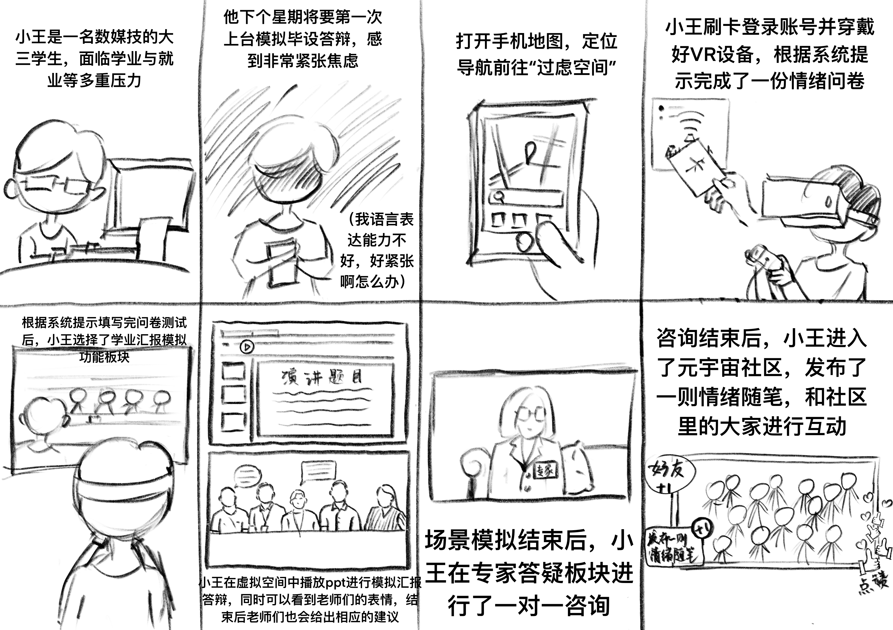

过虑空间 · VR焦虑情绪疗养空间
怕过虑，来过滤！
面向焦虑大学生的 VR 情绪疗养空间，融合场景模拟、情绪宣泄、正念冥想、AI 陪伴与元宇宙社区
一、项目背景
近年来，大学生群体心理焦虑问题日益突出。学业压力、人际交往、就业前景、自我认同等多重因素叠加，使焦虑情绪在校园中广泛蔓延。然而传统的心理咨询资源稀缺、 stigma（病耻感）高、预约门槛高，许多学生无法获得及时的情绪疏导。
"过虑空间"由此而来——"过虑"指过度思虑、过度担忧，"过滤"则代表将负面情绪净化、转化。项目以 VR 沉浸式技术为载体，为焦虑大学生提供一个低门槛、强隐私、可重复使用的情绪疗愈空间。
核心标语：怕过虑，来过滤！
作为UX设计师，我主导了从用户研究、竞品分析、用户画像建模到功能架构与任务场景设计的完整流程，并将定量研究（问卷 + SPSS 分析）与定性设计（场景化交互）深度结合。
二、领域调研（PEST 分析）
为厘清项目所处的宏观环境与发展机会，从政治、经济、社会、技术四个维度进行 PEST 分析：
三、竞品分析
选取心理 VR 领域两款代表性产品进行对比分析，明确"过虑空间"的差异化定位：
| 对比维度 | 好心情 VR 疗愈系统 | 阳光心健 VR 心理训练系统 | 过虑空间（本项目） |
|---|---|---|---|
| 目标用户 | 机构内用户（心理科/睡眠/企业EAP），支持自助使用 | 学校/社区/企业内用户，支持自助训练 | 焦虑大学生（亚健康人群） |
| 使用方式 | VR 自助疗愈 + VR 咨询诊疗，自助与专业并行 | VR 自助放松/脱敏训练，自助为主，可辅以咨询师 | 纯自助式，无需专业人员介入 |
| 核心功能 | 冥想疗愈、减压游戏（拳击/切水果）、意象对话、绘画疗愈、睡眠改善 | 放松训练、脱敏训练（恐高/密闭等）、生理反馈调节、心理评估 | 场景模拟 + 宣泄 + 冥想 + AI 陪伴 + 社区 |
| 场景设计 | 自然疗愈场景（荷塘/海滩/竹林），偏静谧 | 自然放松 + 恐惧脱敏，场景专业但风格统一 | 年轻化场景（汇报/面试/社交），贴合大学生日常 |
| 情绪社区 | 无 | 无 | 元宇宙情绪社区 |
| AI 能力 | AI 数字人陪聊（70+ 角色） | 无 AI 陪伴 | AI 情绪识别 + 个性化推荐 |
| 商业模式 | To B 硬件 + 软件销售，机构采购部署 | To B 设备销售，分专业版 / 标准版 | 校企联合公益，向学生开放 |
| 视觉风格 | 医疗蓝 + 自然绿，专业沉稳 | 科技蓝透明，功能导向 | 低饱和橙红 + 黑紫，年轻治愈 |
四、用户研究
采用"定性访谈 + 定量问卷"混合研究方法，先通过深度访谈挖掘焦虑大学生的真实痛点与情绪需求，再通过大样本问卷验证假设并建模聚类。
4.1 深度访谈（定性）
针对目标用户进行 1 对 1 深度访谈，每位时长约 60 分钟，聚焦焦虑触发场景、现有应对方式、对 VR 疗愈的接受度三个主题。访谈揭示出三类典型诉求：
- 场景化恐惧：汇报、面试、社交等具体场景反复触发焦虑，希望"能在安全的地方先演练"。
- 情绪积压：课业压力长期累积，缺乏宣泄出口，希望"有个地方能痛快释放"。
- 陪伴缺失：不愿对身边人倾诉，但渴望"有人听我说、不评判我"。
4.2 问卷调查（定量）
基于访谈结论设计问卷，线上线下联合发放，共发放问卷209份，剔除无效问卷后总计回收 144 份有效问卷。问卷涵盖焦虑表现、应对方式、VR 接受度、功能期待等维度。
4.3 SPSS 因子分析
为从众多题项中提取核心结构，使用 SPSS 进行因子分析，关键指标如下：
| 公共因子 | 因子包含变量 | 旋转后因子载荷 | 因子命名 |
|---|---|---|---|
| 因子1 场景模拟 |
学业焦虑场景模拟 | 0.787 | 场景模拟 |
| 社交焦虑场景模拟 | 0.786 | ||
| 就业焦虑场景模拟（职场人际交往情形） | 0.774 | ||
| 就业焦虑场景模拟（面试情境） | 0.719 | ||
| 因子2 正念冥想 |
周期性的正念冥想训练 | 0.843 | 正念冥想 |
| 正念冥想引导 | 0.802 | ||
| 运动解压 | 0.670 | ||
| 因子3 解压放松 |
暴力解压 | 0.823 | 解压放松 |
| 按摩放松 | 0.734 |
4.4 K-means 聚类分析
以 3 个因子得分为变量，使用 K-means 聚类将 144 名受访者分为 3 类，最终形成 3 类用户画像（详见第五章）。聚类结果与访谈发现的 3 类诉求高度吻合，验证了定性结论的可靠性。
五、用户画像
基于 K-means 聚类结果，结合访谈素材，构建 3 类用户画像：
核心需求：能在低风险的 VR 环境中反复演练高焦虑场景，逐步脱敏并建立心理预期；演练后希望获得专业反馈与同辈共鸣。
推荐路径：汇报场景模拟 → AI 专家答疑 → 元宇宙情绪社区。
核心需求：需要快速、安全、即时的情绪宣泄出口，释放后能恢复平静回归学习，并在社区中找到同频伙伴。
推荐路径：暴力解压 → 运动解压 → 元宇宙情绪社区。
核心需求：渐进式脱敏训练重建社交信心，配合正念冥想调节心态，并需要持续的非评判性 AI 陪伴。
推荐路径：人群场景模拟 → 正念冥想 → AI 心理陪伴。
六、产品功能设计
围绕 3 类画像的核心需求，设计 5 大功能模块，形成"模拟—宣泄—调节—陪伴—共鸣"的完整疗愈链路：
七、任务场景设计
以小王、小林两位典型用户为例，设计端到端的使用流程，验证功能模块在真实场景中的串联效果：
八、用户体验旅程图
基于三类用户画像与任务场景，绘制从"压力触发"到"VR 疗愈"再到"回归现实"的完整情绪旅程，定位每个阶段的用户行为、触点、痛点与设计机会：
九、故事板
故事板以可视化方式呈现用户在"过虑空间"中的典型使用场景，将抽象的功能模块转化为具象的用户故事，帮助团队理解用户体验的完整叙事脉络。
9.1 场景一：汇报焦虑的小林
小林是一名大三学生，即将迎来期末汇报，面对众多同学和老师的注视让她倍感焦虑。她通过"过虑空间"进行场景模拟演练，逐步建立信心。

9.2 场景二：课业压力的小王
小王是一名研一学生，面对繁重的课业压力和导师要求，情绪长期积压。他通过"过虑空间"进行情绪宣泄与正念调节，恢复内心平静。

十、任务分析流程图
基于用户研究结论，将用户核心任务拆解为结构化流程，明确每个环节的输入、处理与输出，为交互设计提供清晰的逻辑框架。
10.1 核心任务流程总览
10.2 任务流程设计要点
- 分支决策：根据用户焦虑类型自动匹配最优疗愈路径，避免功能堆砌导致用户迷失。
- 渐进式脱敏：场景模拟采用"从易到难"的梯度设计，逐步提升用户心理承受阈值。
- 情绪闭环：所有路径最终汇聚于社区，形成"个人疗愈→群体共鸣"的完整闭环。
- 即时反馈：每个环节提供明确的进度指示与效果反馈，增强用户掌控感。
十一、视觉设计板块
视觉设计围绕"治愈感与沉浸感并存"的核心理念，构建低饱和橙红与黑紫的专属视觉系统，打破传统心理产品的沉重感，塑造年轻、温暖、专业的品牌形象。
11.1 视觉规范
11.2 设计原则
11.3 高保真设计
高保真设计将视觉规范落地到具体界面，涵盖VR场景入口、功能选择面板、疗愈场景界面、社区交互等核心界面，形成完整的视觉语言系统。
十二、项目复盘与反思
做得好的地方：
- 定量研究与定性设计深度结合：用访谈发现痛点，用 SPSS 因子分析收敛维度，用 K-means 聚类划分人群，使功能设计建立在可量化的人群结构之上，而非主观臆断。
- 差异化路径设计：3 类画像对应 3 条功能路径，避免"一锅端"式功能堆砌，提升了产品对差异化需求的精准度。
- 视觉与定位匹配：低饱和橙红 + 黑紫的视觉系统，既区别于竞品的医疗冷感，又契合年轻群体的治愈审美，强化了"过虑空间"的品牌识别。
不足与改进方向：
- 问卷样本 144 份虽满足因子分析基本要求，但若能扩大至 300+ 并做跨校对比，画像代表性会更稳健。
- 因子累计解释变异量 57.934%，仍有约 42% 的变异未被覆盖，未来可补充题项挖掘更多潜在维度。
- 任务场景目前以线性流程为主，后续可引入分支决策与情绪状态自适应推荐，提升个性化程度。
- VR 疗愈的长期效果需配合纵向追踪数据验证，建议接入使用频次与情绪量表的前后测对比。
完整项目展示
以下为该项目的完整展示幻灯片，包含详细的视觉设计、功能流程、用户研究数据等。
查看完整项目展示 PPT